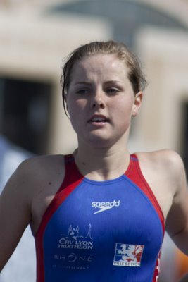

Naam: Linde Herreman
Leeftijd: 20jaar
Woonplaats: Izegem
Hoe lang zit je al in de triatlonsport en hoe ben je er mee begonnen?
Ik ben begonnen met triatlon toen ik 15 jaar was (2005). Dit kwam vooral omdat er ieder jaar in mijn thuisstad een triatlon wordt georganiseerd en ik zo interesse had om zelf eens mee te doen.
Was je ervoor ook sportief actief?
Vroeger heb ik competitie gezwommen, vooral de langere afstanden (400 en 800m). Dus dit kwam goed uit voor triatlon. In de zomer zwom ik ook veel openwater wedstrijden (1km) wat denk ik nu wel een voordeel is om opnieuw in openwater te zwemmen tijdens de triatlon.
Hoe ziet je wekelijks trainingsschema er uit?
Zoals de meeste al zullen hebben vernomen werd ik tijdens een trainingsstage in Portugal aangereden terwijl ik aan het fietsen was. Met als gevolg dat mijn rug gebroken was en nog wat interne bloedingen (hersenbloeding, blaasbloeding en longbloeding). Door dit ongeval moet ik ook 3x per week naar de kinesist voor oefeningen voor de been- en heupspieren. Ik merk dat het ondertussen al veel beter aanvoelt om de oefeningen te doen. Maandag (7/03) vroeg ik ook aan de kinesist of ik op de hometrainer mag fietsen omdat dit met een rechte rug gedaan wordt. En dit mocht dus ben ik toch terug al iets aan het doen, wel korte stukken van 30min.
Anders ziet mijn trainingsschema er zo uit: 4 à 5 x zwemmen – 1 à 2 x fietsen – 3 à 4 x lopen en daarbij ook nog stabilisatie en krachttraining.
Is dit te combineren met je studies/werk?
Ja dit is te combineren doordat ik ook maar halftijds studeer om voldoende te kunnen trainen.
In welk onderdeel wil je nog veel progressie maken?
Vooral in het fietsen en het lopen.
Wat zijn je ambities op lange termijn?
Op lange termijn zou ik graag de internationale top bereiken hoewel ik weet dat dit zeker niet gemakkelijk zal zijn. Het wordt een lange weg!
Hoe ben je bij het SMO-Triatlon Team terecht gekomen?
De professionele aanpak en ondersteuning bij de atleten sprak me aan.